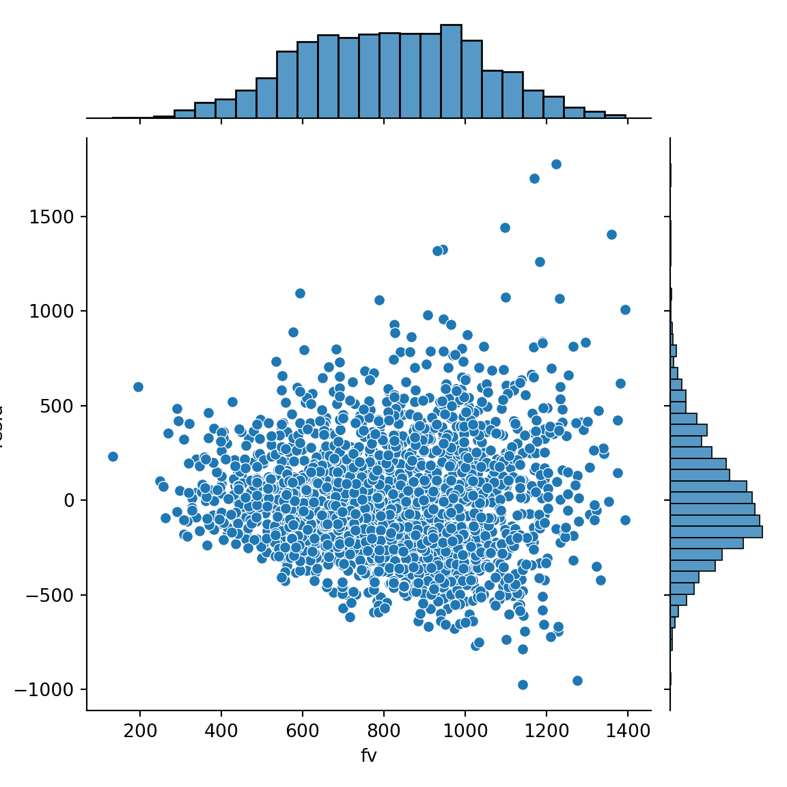
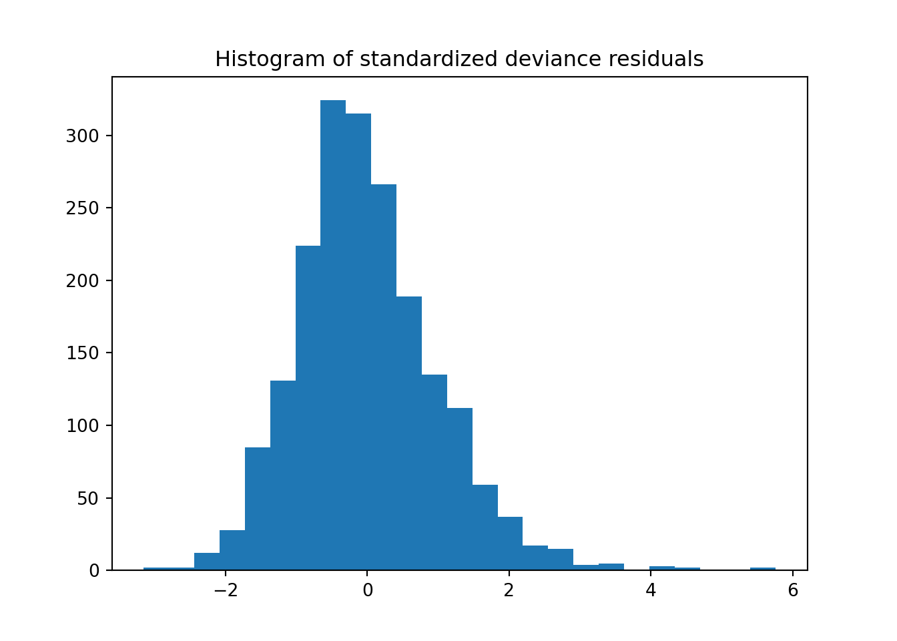
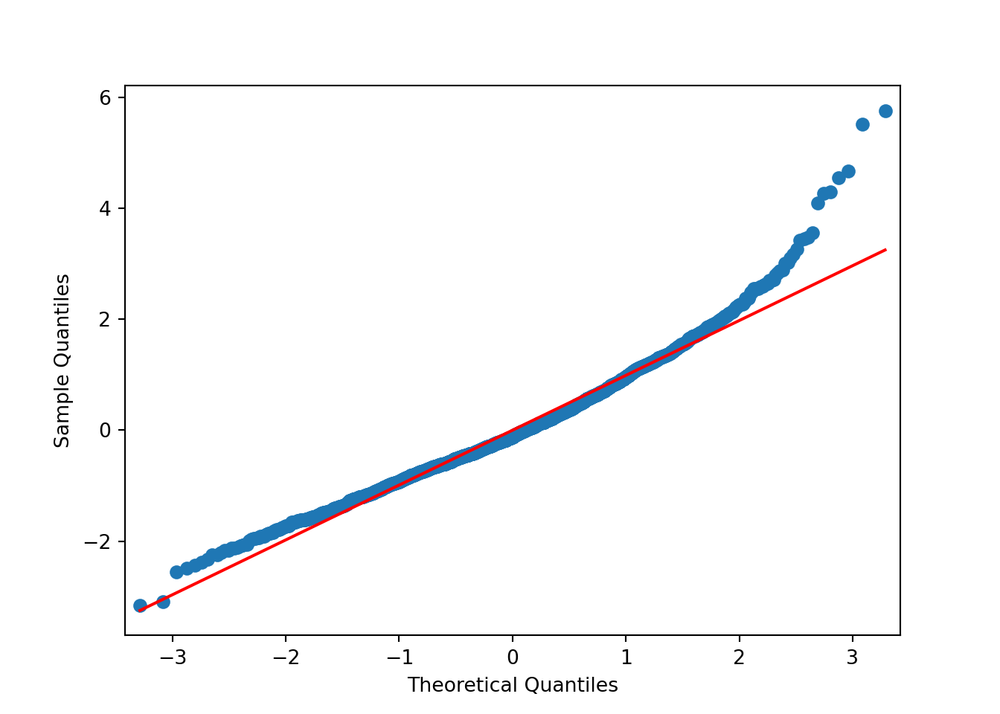
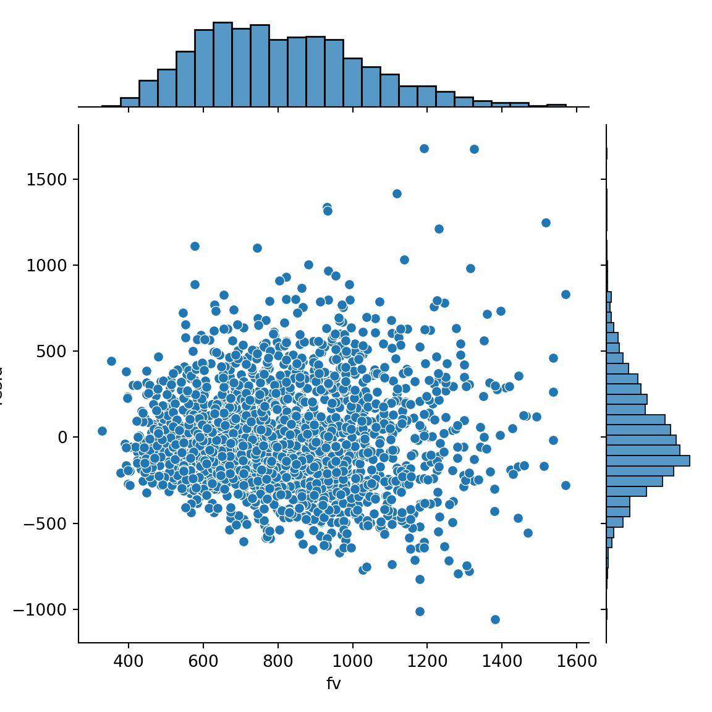
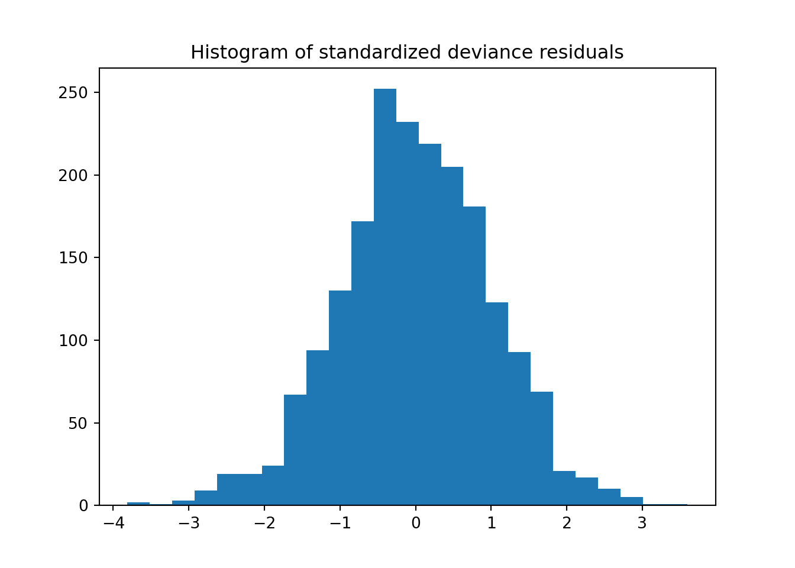
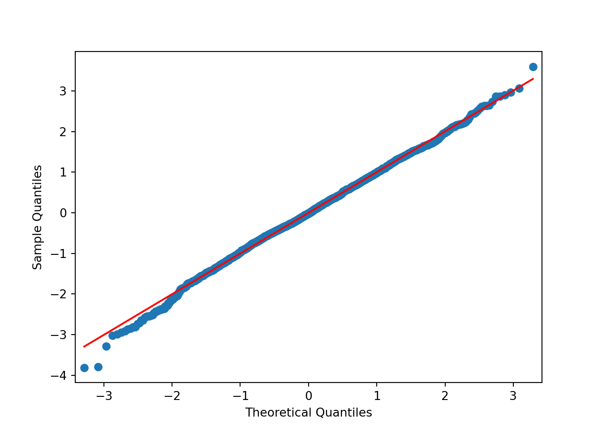
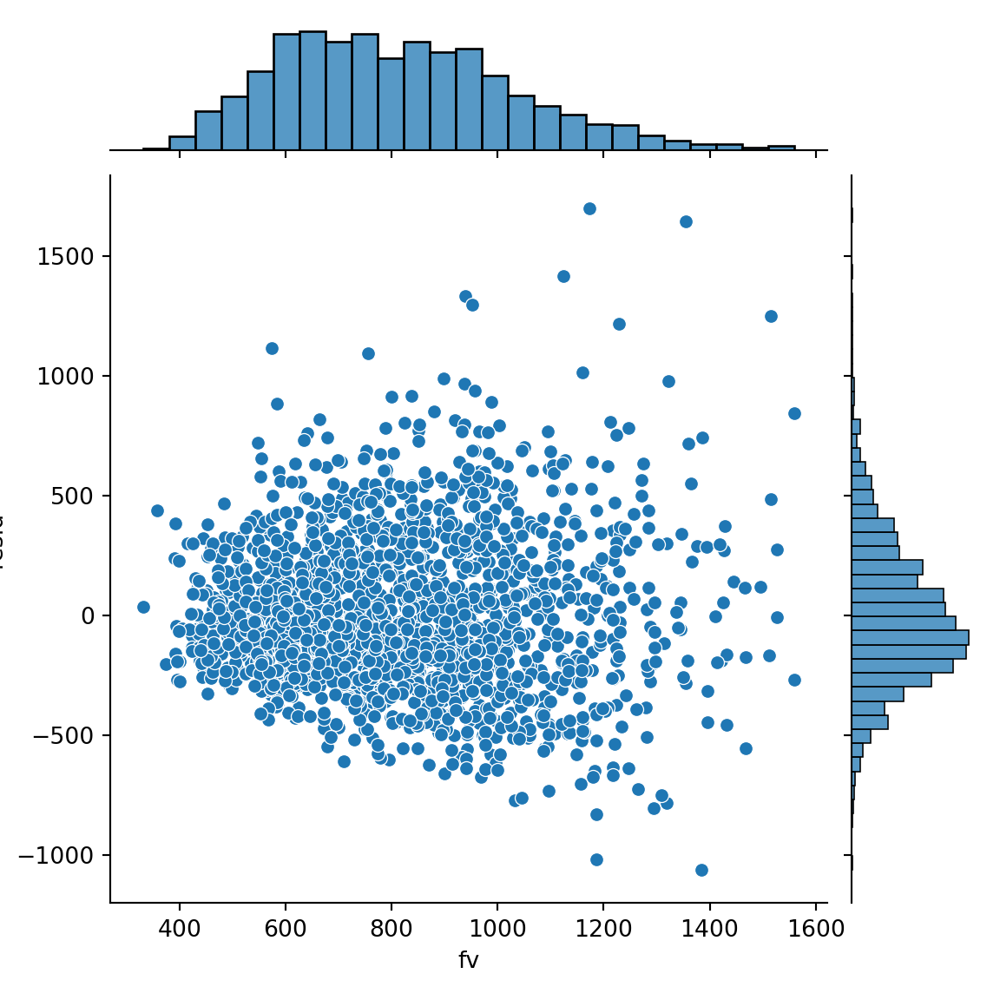
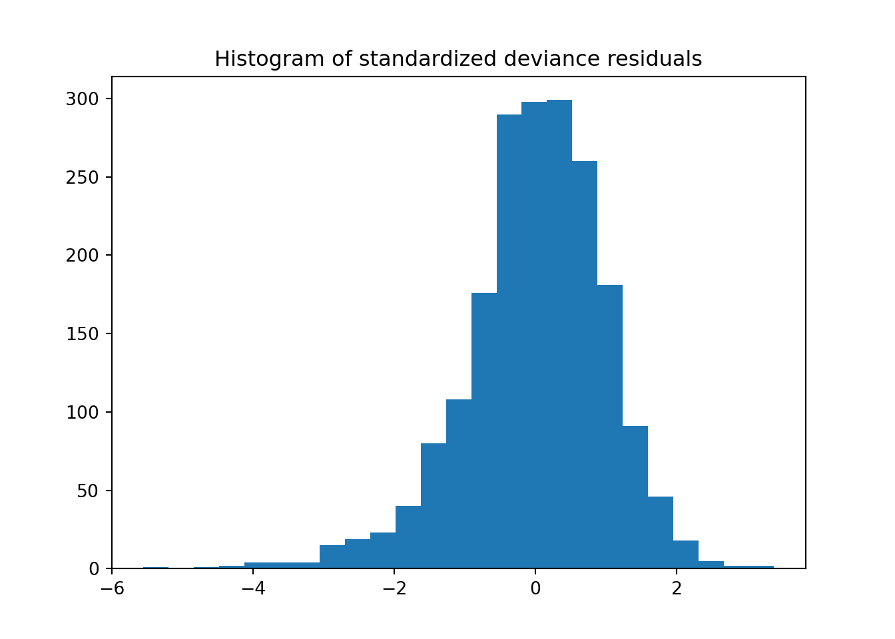
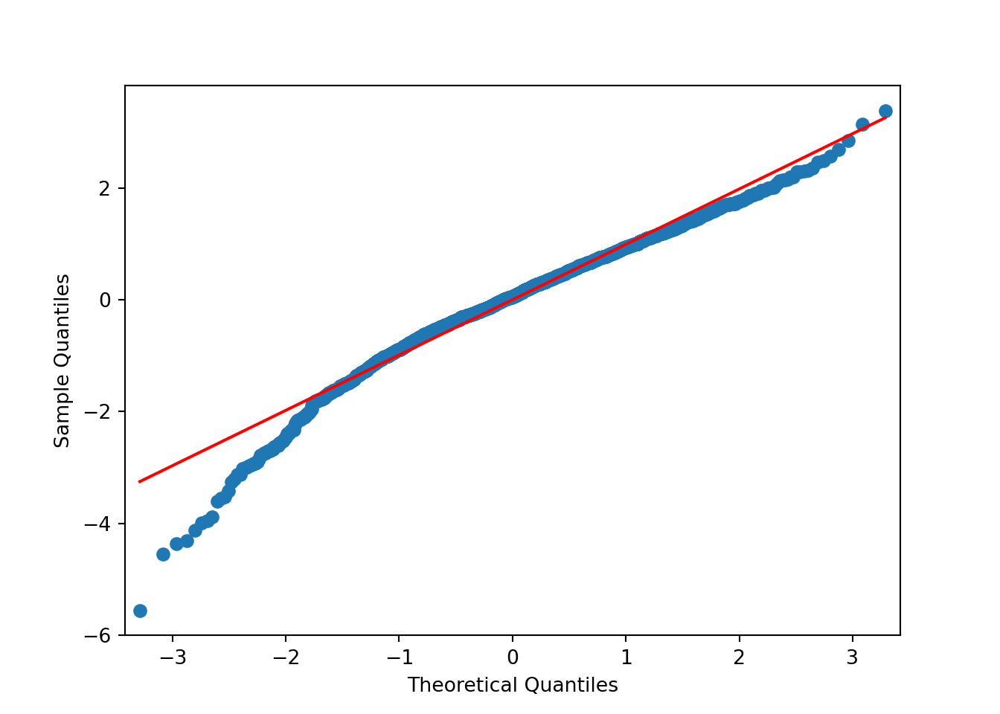

# Para obter os dados, é necessário instalar o pacote gamlss.data na linguagem de programação R e rodar o código abaixo:
# write.csv(gamlss.data::rent,"rent.csv") Introdução
Esse relatório tem como objetivo mostrar alguns códigos para se usar modelos estatísticos dentro da linguagem Python. São dados de preços aluguéis em Munique, 1980. O exemplo utilizado considera que a variável resposta é contínua.
A base de dados dispõe de informações de 1969 imóveis disponíveis para aluguel em nove variáveis, das quais cinco serão usadas na análise:
R: variável resposta, é o aluguel mensal (em Marcos alemães) menos o custo utilitário do imóvel;
Fl: Área construída, em metros quadrados;
A: Ano de construção;
H: Fator com dois níveis, se o imóvel tem (0) ou não (1) aquecimento central;
loc: um fator que classifica a locação do imóvel como abaixo da média (1), na média (2) ou acima da média (3).
import pandas as pdrent = pd.read_csv("rent.csv")
rent["H"] = rent["H"].astype("category")
rent["loc"] = rent["loc"].astype("category")
rent.head() Unnamed: 0 R Fl A Sp Sm B H L loc
0 1 693.3 50 1972 0 0 0 0 0 2
1 2 422.0 54 1972 0 0 0 0 0 2
2 3 736.6 70 1972 0 0 0 0 0 2
3 4 732.2 50 1972 0 0 0 0 0 2
4 5 1295.1 55 1893 0 0 0 0 0 2from patsy import dmatrices
y, X = dmatrices('R ~ Fl + A + H + loc', data=rent, return_type='dataframe')import plotnine as pny1 = pn.ggplot(mapping=pn.aes(x='R'),data=rent) + \
pn.geom_histogram(fill='#0c0cc08b',color='black') + \
pn.xlab('Aluguel mensal menos o \n custo utilitário do imóvel')
y1<plotnine.ggplot.ggplot object at 0x000002434B4379E0>p1 = pn.ggplot(mapping=pn.aes(x="Fl",y="R"),data=rent) + \
pn.geom_point(color='blue') + \
pn.xlab('Área Construída')
p1<plotnine.ggplot.ggplot object at 0x000002434A6CC0E0>O valor do aluguel parece aumentar conforme a área do imóvel. Além disso, observa-se também que a variação dos preços de aluguel aumenta conforme a área.
p2= pn.ggplot(mapping=pn.aes(x="A",y="R"),data=rent) + \
pn.geom_point(color='blue') + \
pn.xlab('Ano de Construção')
p2<plotnine.ggplot.ggplot object at 0x000002434B0E76B0>Com relação ao ano de construção, não parece haver uma alteração, em termos de valor mediano, até o ano de 1960. A partir de então nota-se um ligeiro aumento.
p3=pn.ggplot(mapping=pn.aes(x="H",y="R"),data=rent) + \
pn.geom_boxplot(fill='lightblue') + \
pn.xlab('Se imóvel tem (0) \n ou não (1) aquecimento central')
p3<plotnine.ggplot.ggplot object at 0x000002434B724110>Imóveis com aquecimento central (H=0) apresentam maior mediana para os preços de aluguel em relação aos que não tem (H=1). A distribuição dos valores de aluguel, em ambos os grupos, apresenta assimetria (á direita). Além disso, a variação é maior no grupo com maior mediana.
p4=pn.ggplot(mapping=pn.aes(x="loc",y="R"),data=rent) + \
pn.geom_boxplot(fill='lightblue') + \
pn.xlab('Locação imóvel abaixo_média, \n na média ou acima_média.')
p4<plotnine.ggplot.ggplot object at 0x000002434B73D790>Finalmente, os preços de aluguel apresentam maior mediana para a região “acima da média”, seguida pelas regiões “na média” e “abaixo da média”. Nota-se, novamente, assimetria nas distribuições dos preços de aluguel em cada grupo e variância não constante.
Resposta - v.a. Normal
import statsmodels.api as sm#mod = sm.OLS(y,X)
mod = sm.GLM(y,X,family=sm.families.Gaussian(link=sm.families.links.Identity()))res = mod.fit()print(res.summary()) Generalized Linear Model Regression Results
==============================================================================
Dep. Variable: R No. Observations: 1969
Model: GLM Df Residuals: 1963
Model Family: Gaussian Df Model: 5
Link Function: Identity Scale: 95449.
Method: IRLS Log-Likelihood: -14080.
Date: sex, 13 nov 2026 Deviance: 1.8737e+08
Time: 17:56:08 Pearson chi2: 1.87e+08
No. Iterations: 3 Pseudo R-squ. (CS): 0.3978
Covariance Type: nonrobust
==============================================================================
coef std err z P>|z| [0.025 0.975]
------------------------------------------------------------------------------
Intercept -2775.0388 527.648 -5.259 0.000 -3809.209 -1740.868
H[T.1] -204.7596 19.408 -10.550 0.000 -242.798 -166.721
loc[T.2] 134.0523 25.173 5.325 0.000 84.715 183.390
loc[T.3] 209.5815 27.163 7.716 0.000 156.343 262.820
Fl 8.8394 0.339 26.068 0.000 8.175 9.504
A 1.4808 0.268 5.532 0.000 0.956 2.005
==============================================================================residuals = pd.DataFrame({"fv":res.fittedvalues,"resid":res.resid_response})
import seaborn as sns
sns.jointplot(x="fv",y="resid",data=residuals)<seaborn.axisgrid.JointGrid object at 0x000002435273E060>
from matplotlib import pyplot as plt
from scipy import stats
resid = res.resid_deviance.copy()
resid_std = stats.zscore(resid)
fig, ax = plt.subplots()
ax.hist(resid_std, bins=25)
ax.set_title("Histogram of standardized deviance residuals");
from statsmodels import graphics
graphics.gofplots.qqplot(resid_std, line="r").show()
Claramente o modelo não se ajusta bem os dados.
No primeiro gráfico fica evidente que os resíduos não têm dispersão constante, de forma que a variância aumenta conforme a média.
Podemos observar também, pelos gráficos, que os resíduos têm distribuição assimétrica.
O gráfico quantil-quantil normal deixa nítido que os resíduos não apresentam distribuição normal.
Resposta - v.a. Gama
mod1 = sm.GLM(y,X,family=sm.families.Gamma(link=sm.families.links.Log()))res1 = mod1.fit()print(res1.summary()) Generalized Linear Model Regression Results
==============================================================================
Dep. Variable: R No. Observations: 1969
Model: GLM Df Residuals: 1963
Model Family: Gamma Df Model: 5
Link Function: Log Scale: 0.13779
Method: IRLS Log-Likelihood: -13882.
Date: sex, 13 nov 2026 Deviance: 282.57
Time: 17:56:13 Pearson chi2: 270.
No. Iterations: 11 Pseudo R-squ. (CS): 0.4177
Covariance Type: nonrobust
==============================================================================
coef std err z P>|z| [0.025 0.975]
------------------------------------------------------------------------------
Intercept 2.8650 0.634 4.519 0.000 1.622 4.108
H[T.1] -0.3001 0.023 -12.869 0.000 -0.346 -0.254
loc[T.2] 0.1908 0.030 6.307 0.000 0.131 0.250
loc[T.3] 0.2641 0.033 8.092 0.000 0.200 0.328
Fl 0.0106 0.000 26.075 0.000 0.010 0.011
A 0.0015 0.000 4.695 0.000 0.001 0.002
==============================================================================residuals1 = pd.DataFrame({"fv":res1.fittedvalues,"resid":res1.resid_response})
import seaborn as sns
sns.jointplot(x="fv",y="resid",data=residuals1)<seaborn.axisgrid.JointGrid object at 0x0000024352A57EF0>
from matplotlib import pyplot as plt
from scipy import stats
resid1 = res1.resid_deviance.copy()
resid_std1 = stats.zscore(resid1)
fig, ax = plt.subplots()
ax.hist(resid_std1, bins=25)
ax.set_title("Histogram of standardized deviance residuals");
from statsmodels import graphics
graphics.gofplots.qqplot(resid_std1, line="r").show()
Os resíduos para o modelo com resposta gamma apresentam comportamento bem mais satisfatório do que para o modelo com resposta normal.
Os resíduos não tem mais distribuição assimétrica.
O padrão de variância não constante diminuiu e percebeu-se boa aderência à distribuição normal.
De qualquer forma, vamos avançar no ajuste e avaliação de outros modelos.
Resposta - v.a. Normal Inversa
mod2 = sm.GLM(y,X,family=sm.families.InverseGaussian(link=sm.families.links.Log()))res2 = mod2.fit()print(res2.summary()) Generalized Linear Model Regression Results
==============================================================================
Dep. Variable: R No. Observations: 1969
Model: GLM Df Residuals: 1963
Model Family: InverseGaussian Df Model: 5
Link Function: Log Scale: 0.00018669
Method: IRLS Log-Likelihood: -14015.
Date: sex, 13 nov 2026 Deviance: 0.44597
Time: 17:56:17 Pearson chi2: 0.366
No. Iterations: 15 Pseudo R-squ. (CS): 0.4014
Covariance Type: nonrobust
==============================================================================
coef std err z P>|z| [0.025 0.975]
------------------------------------------------------------------------------
Intercept 3.3624 0.636 5.289 0.000 2.117 4.608
H[T.1] -0.3073 0.022 -14.261 0.000 -0.350 -0.265
loc[T.2] 0.1936 0.028 6.958 0.000 0.139 0.248
loc[T.3] 0.2542 0.031 8.214 0.000 0.194 0.315
Fl 0.0107 0.000 24.993 0.000 0.010 0.012
A 0.0013 0.000 3.889 0.000 0.001 0.002
==============================================================================residuals2 = pd.DataFrame({"fv":res2.fittedvalues,"resid":res2.resid_response})
import seaborn as sns
sns.jointplot(x="fv",y="resid",data=residuals2)<seaborn.axisgrid.JointGrid object at 0x0000024352B2A6F0>
from matplotlib import pyplot as plt
from scipy import stats
resid2 = res2.resid_deviance.copy()
resid_std2 = stats.zscore(resid2)
fig, ax = plt.subplots()
ax.hist(resid_std2, bins=25)
ax.set_title("Histogram of standardized deviance residuals");
from statsmodels import graphics
graphics.gofplots.qqplot(resid_std2, line="r").show()
Claramente o modelo não se ajusta bem os dados.
Podemos observar também, pelos gráficos, que os resíduos têm distribuição assimétrica.
O gráfico quantil-quantil normal deixa nítido que os resíduos não apresentam distribuição normal.
Portanto, optei por escolher o modelo considerando a resposta com distribuição gamma.
Modelo final
print(res1.summary()) Generalized Linear Model Regression Results
==============================================================================
Dep. Variable: R No. Observations: 1969
Model: GLM Df Residuals: 1963
Model Family: Gamma Df Model: 5
Link Function: Log Scale: 0.13779
Method: IRLS Log-Likelihood: -13882.
Date: sex, 13 nov 2026 Deviance: 282.57
Time: 17:56:20 Pearson chi2: 270.
No. Iterations: 11 Pseudo R-squ. (CS): 0.4177
Covariance Type: nonrobust
==============================================================================
coef std err z P>|z| [0.025 0.975]
------------------------------------------------------------------------------
Intercept 2.8650 0.634 4.519 0.000 1.622 4.108
H[T.1] -0.3001 0.023 -12.869 0.000 -0.346 -0.254
loc[T.2] 0.1908 0.030 6.307 0.000 0.131 0.250
loc[T.3] 0.2641 0.033 8.092 0.000 0.200 0.328
Fl 0.0106 0.000 26.075 0.000 0.010 0.011
A 0.0015 0.000 4.695 0.000 0.001 0.002
==============================================================================Modelo:
log(mu_hat) = 2.86494 + 0.01062 Fl + 0.00151 A -0.30007 H1 + 0.19076 loc2 + 0.26408 loc3
mu_hat = exp(2.86494 + 0.01062 Fl + 0.00151 A -0.30007 H1 + 0.19076 loc2 + 0.26408 loc3)
Interpretação:
Área construída: Quando a área construída aumenta em uma unidade, o aluguel do imóvel é exp(0.01062) vezes maior
Ano de construção: Quando o ano de construção aumenta em uma unidade, o aluguel do imóvel é exp(0.00151) vezes maior